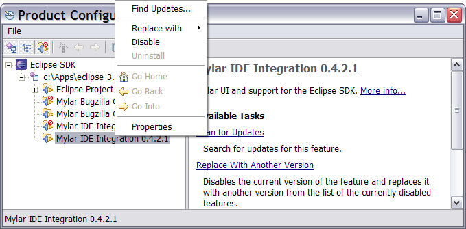

For supported platforms and known limitations please see http://eclipse.org/mylar/dl.php
Contents
The most likely reason is that you are using an incompatible VM (e.g. JDK 1.4), in which case you'll errors like the following in your log file. To check JDK version that Eclipse was launched with to to Help -> About Eclipse SDK -> Configuration Details and verify that the java.vm.version is 1.5. Mac users should refer to the last bug 1163477 for instructions on how to change the 1.4 default.
Root exception: java.lang.UnsupportedClassVersionError: org/eclipse/mylar/tasklist/MylarTasklistPlugin (Unsupported major.minor version 49.0)
This can also be the result of using an incompatible version of Eclipse. Separate versions and update sites exist for Eclipse 3.1 and for the latest 3.2 milestone), in which case you'll see errors like the following in your <workspace>/.metadata/.log file or in a Mylar view:
java.lang.NoSuchMethodError: org.eclipse.ui.internal.dialogs.FilteredTree.getFilterControl()Lorg/eclipse/swt/widgets/Text; org.osgi.framework.BundleException: The activator org.eclipse.mylar.java.MylarJavaPlugin for bundle org.eclipse.mylar.java is invalid
In this case the easiest thing to do is reinstall Mylar. Your tasks won't be lost, by default they are stored in the <workspace>/.mylar/tasklist.xml file which will be read next time Mylar starts. First, uninstall the old version of Mylar using Help -> Software Updates -> Manage Configuration. You need to first Disable on all Mylar features by right-clicking them, allow Eclipse to restart after the last is disabled, and after restart. Then ensure that the 3rd toolbar button is pressed (figure below) so that you see the disabled features to uninstall, and Uninstall them using the popup menu. If you don't uninstall the the Update Manager will think that you have the latest and tell you that there are no updates. Note that manually removing the plug-ins and features can lead to Eclipse configuration errors. After uninstalling update Eclipse by adding the correct update site specified at: http://eclipse.org/mylar/dl.php, and after that automatically or manually updating will install the correct version.
